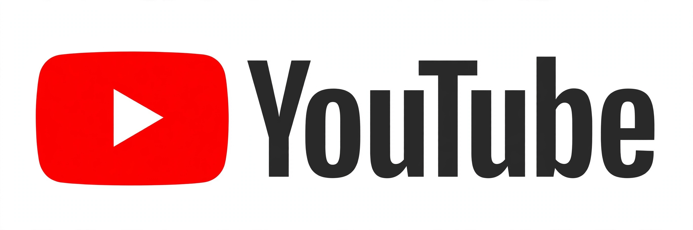

YouTube
| YouTube | |
|---|---|
 | |
| Type of site | Online video sharing platform |
| Founded | February 14, 2005; San Mateo, California, United States |
| Headquarters | San Bruno, California, United States |
| Founders | Chad Hurley, Steve Chen, Jawed Karim |
| Owner | Google (Alphabet) |
| URL | youtube.com |
YouTube is an American online video-sharing platform owned by Google. Launched in 2005 by three former PayPal employees, it lets users upload, view, rate, share and comment on videos, and was acquired by Google in late 2006 for about US$1.65 billion in stock, as commonly reported.
The first video, 'Me at the zoo', was uploaded by co-founder Jawed Karim in April 2005. The service's homepage is recreated at youtube.com, and its music-focused sister service at YouTube Music.
Contents
History
YouTube grew extremely quickly in 2005-2006, becoming the dominant consumer video site. It introduced partner revenue sharing, HD video, live streaming, Shorts (short vertical video), and subscription offerings such as YouTube Premium over later years.
Features
Viewers can subscribe to channels, build playlists, like and comment, and receive recommendations driven by watch history. Creators use YouTube Studio for uploads, analytics and monetisation.
Impact and criticism
YouTube is a major source of entertainment, education and news, and has been criticised over recommendation effects, misinformation, copyright disputes handled through Content ID, and child-safety and moderation questions.
See also
Links in the article body and infobox point to related articles and to the site's own homepage, recreated elsewhere in this web.
References
This article is a recreation from memory for the muse-webcrawl experiment. Factual statements are paraphrased; exact citations, page statistics and some dates are recorded as uncertain in the project ledger, not on this page.
External links
Official website — linked from this page to its recreated homepage in this web.